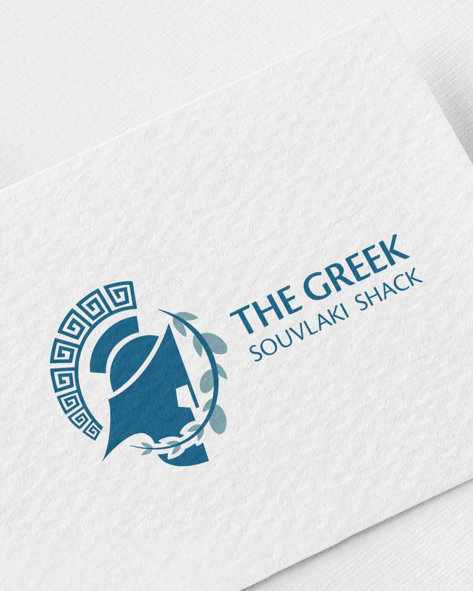
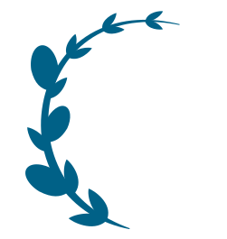
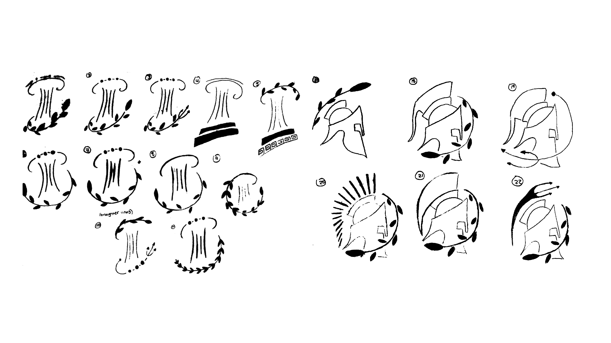
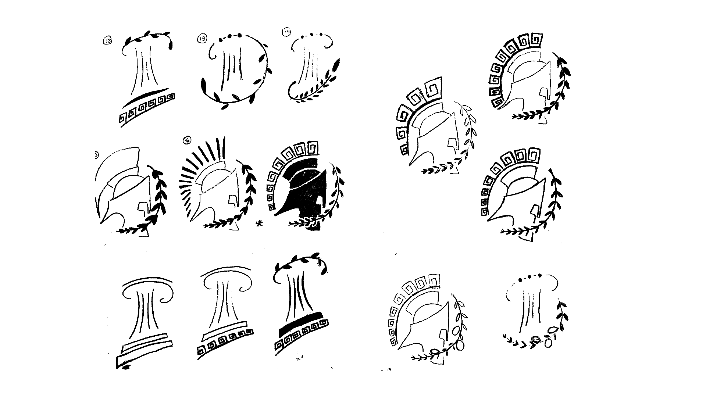
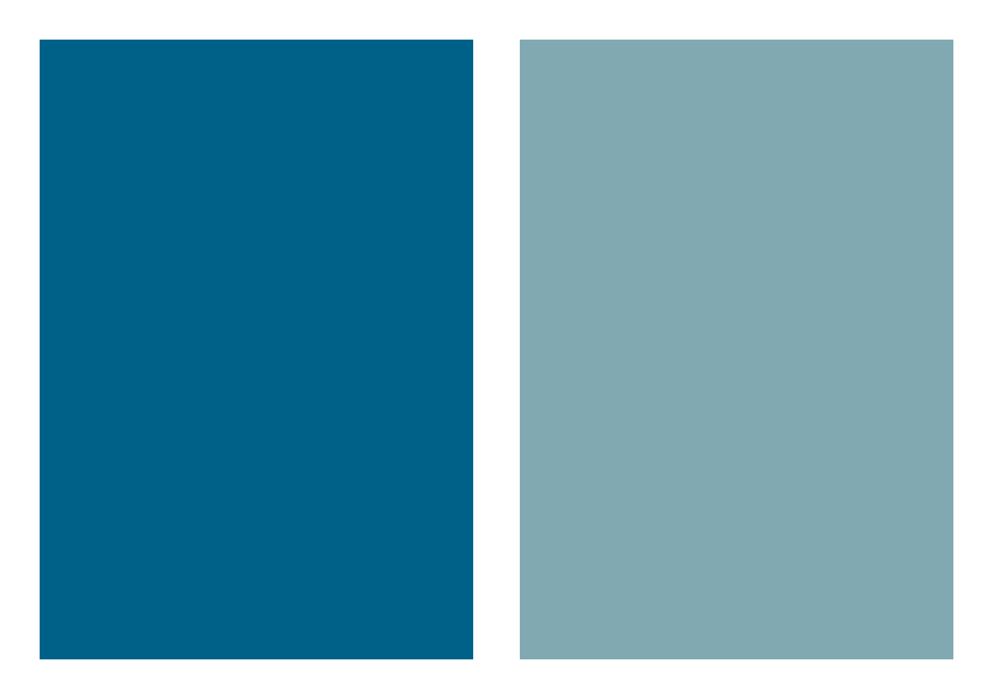

Logo design & Brand identity
A brand concept
Logo & branding


The Overview
Here's what we're working with
The Greek Souvlaki Shack is a concept of a small family-run Greek restaurant located in the downtown core of a major city. The restaurant would specialize in Mediterranean cuisine, and also offers imported Greek drinks and seafood options. The restaurant itself would have an intimate setting, giving off a modern café feel when first walking in; differentiating it from all other Greek restaurants.
The Mission
The objective of this creative is to bring the essence of the Greek Souvlaki Shack to life through a fresh logo; one that would reflect the brand’s identity of deluxe quality greek food in a trendy location.
The Ideas from my Brain
Sketching sketches
The first initial direction for the logo was to keep the Acropolis pillars of the original logo; which describes the wordmark of the brand from the word “shack”. This goes hand-in-hand with how the brand is perceived from the surface.

I then started to explore a bolder approach from the restaurant's potential motto, which is 'Where the Greek Gods come to dine'. This is where more explorative elements are introduced to the design, such as a spartan helmet to signify a God, an olive branch to signify cuisine, and a Greek pattern to signify culture.

After endless back-and-forth discussions with myself over the direction of the artwork, I decided to go with the bolder approach. It was the stronger direction of the two options, and made more of an impact as a brand identifier.

The process
Colour palette

The brand’s logo colours consist of two shades of blue: a primary blue and an accent blue. The combination of both these colours together give the logo a unified and eye-catching look. The muted tones of blue are not overpowering the logo’s appearance, but actually compliment the artwork and its message.
Typography
Arial Narrow was chosen for the headings as it is slim enough to fit lengthier titles, but also complimentary to the body copy. Arial Regular was chosen for the body copy as it is clear and legible on both web and print. Both fonts were chosen for accessibility to users and the team.

The outcome
Here's what the finished product looks like
The communication tools compliment one another as a unique set of informative images. Everything is unified & connected. As each theme has its own symbol/image, it’s more likely to be remembered by clients that are viewing. Repetition also helps. With the implementation of an illustrative, yet informative communication plan, CoE can become identifiable to its internal and external clients.